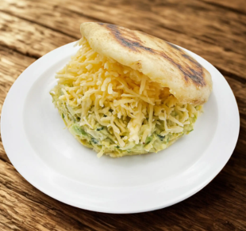

Home
La Sifrina

Description
"Sifrina" means a fancy, high-society girl.
This arepa is a luxurious twist on the Reina Pepiada,
where the chicken is replaced with chicken salad made with gourmet ingredients
Ingredients
- -Precooked corn flour (e.g., Harina P.A.N.)
- - Warm water
- - Salt
- -Oil (for cooking)
- -Cilantro
- -Shredded chicken
- -Avocado
- -Mayonese
- -Onion
- -Yellow Cheese
Step by Step
- Meassure the Ingredients
- Mix the Dough
- Knead and Rest
- Shape the Arepas
- Coon on Skillet
- Bake for Fluffiness(Optional)
- Slice and Fill